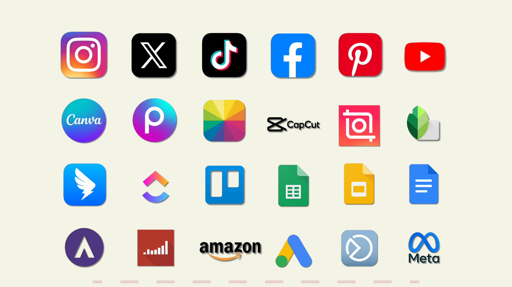
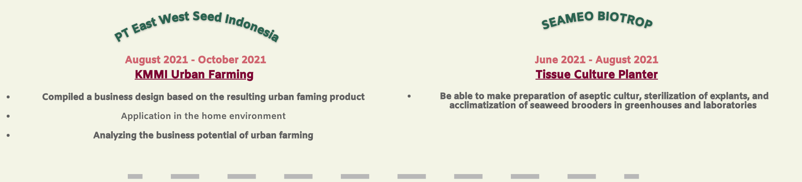
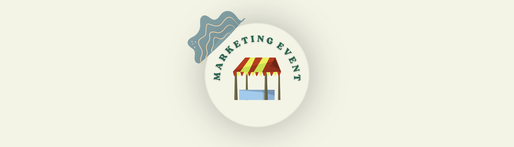
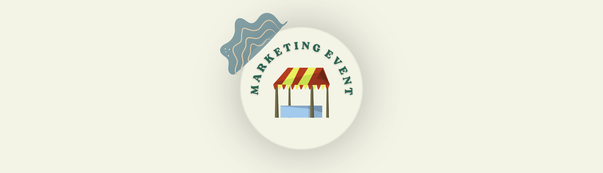
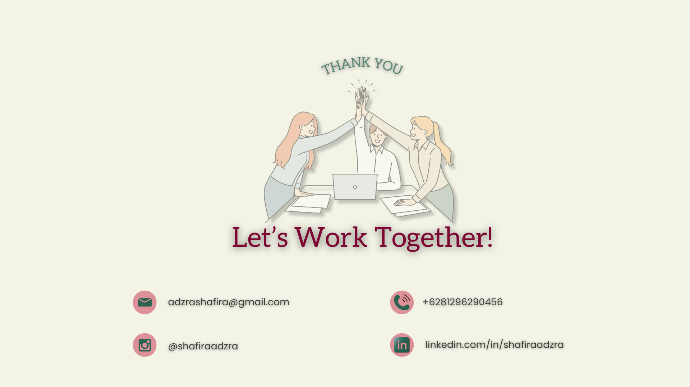
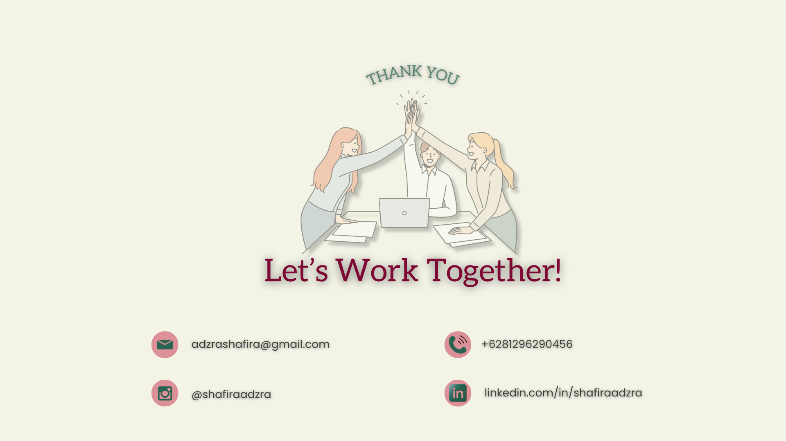

ABOUT ME
A final year student of Padjadjaran University and creative individual to the idea of content creation on how to influence costumer behavior on social media. Have a strong motivation to develop and learn new things. Experienced at create creative content for social media such as content writing, copy writing, content creation and also understand how to manage ads on Instagram, facebook, and google.
Hardworking person and responsible in doing a job and always keeping up with the latest trend.
Looking for new insight and experience to further develop my digital marketing and social media skills.
Skills
Experience
Education




 

 
